Tutorial - Diárias e Passagens

Etapa 1
Faça login como editor em http://trf6.jus.br/editores
Etapa 2
- Abra página de diárias e passagens 2 vezes
- Uma (página principal) nós vamos editar, e a outra, vamos adicionar
/editor no final da URL para acessarmos o editor
OBS: no momento, a página está em teste, portanto, /diarias deve ser trocado para /diarias-teste em todos os links temporariamente.
Etapa 3
- Na página principal, vamos clicar em
Editar página no menu superior
- Depois, quando o editor abrir, vamos clicar em cima da tabela e selecionar
Edit code
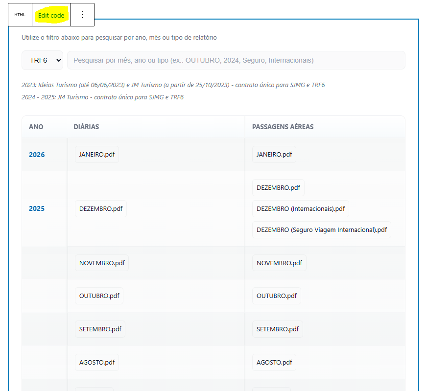
- No topo da caixa que abrir, selecione a aba
JavaScript
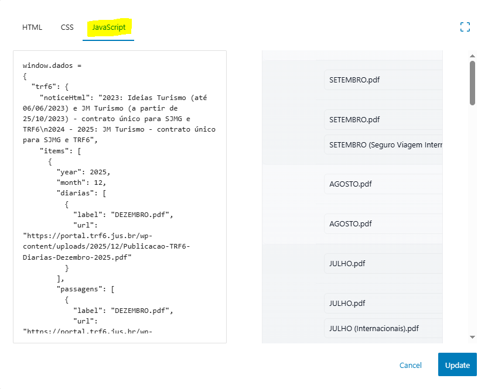
- Selecione tudo que estiver dentro da caixa de texto (
Ctrl + A) e copie (Ctrl + C)
- Você também pode fazer isso clicando em cima com o botão direito, sendo possível selecionar tudo e copiar
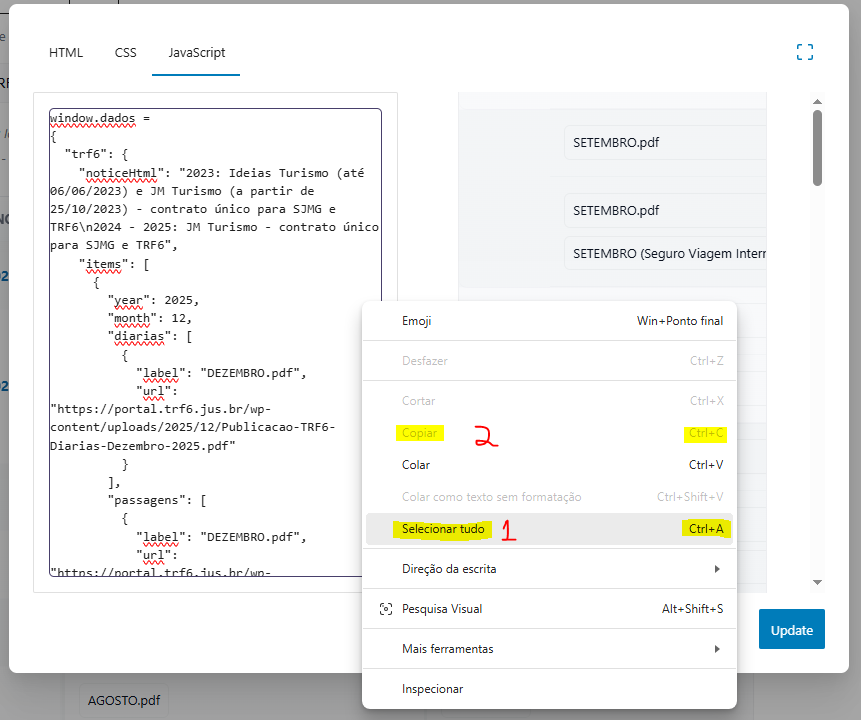
Etapa 4
- No editor, aberto na segunda página, vamos clicar em
Colar JSON
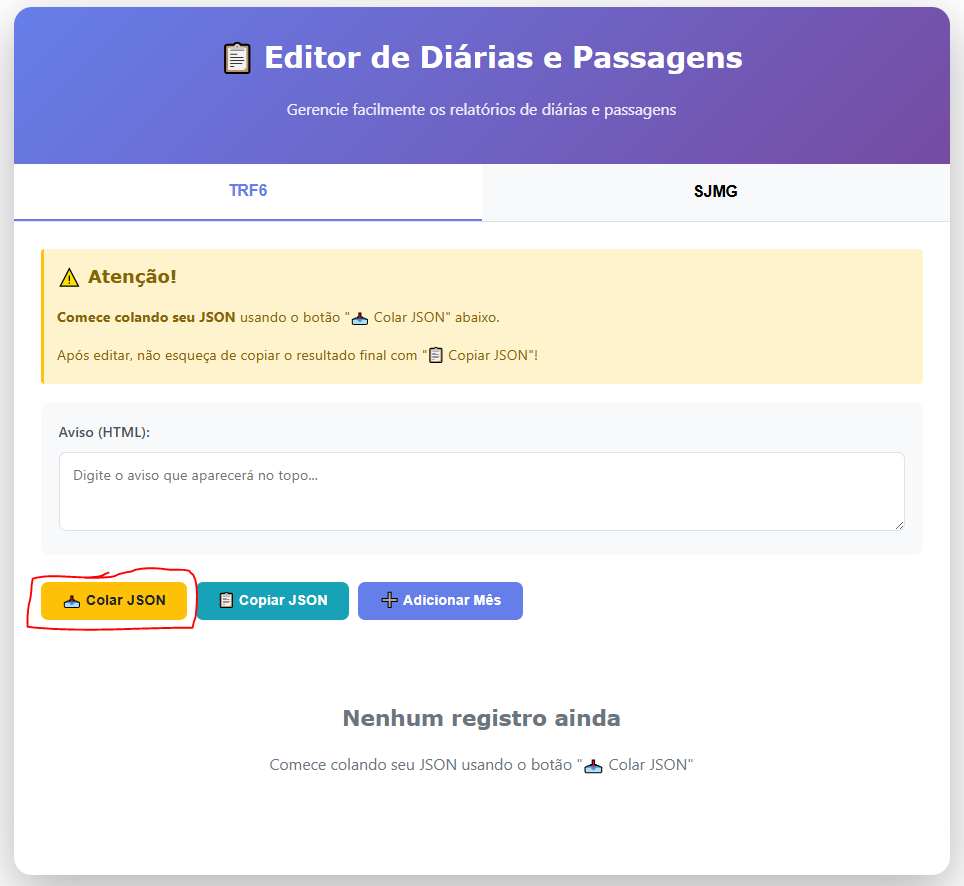
- Ao abrir uma caixa, no campo de texto, vamos colar (
Ctrl + V) o que tínhamos copiado
- É possível colar clicando com o botão direito em cima do campo também
- Ao colar, clique em
Carregar para atualizar o editor
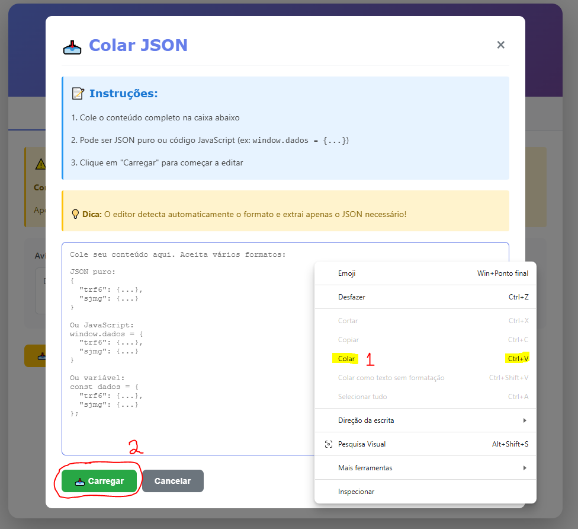
- E pronto, o editor vai estar preenchido com a versão atual dos dados da tabela, pronto para você poder fazer as alterações
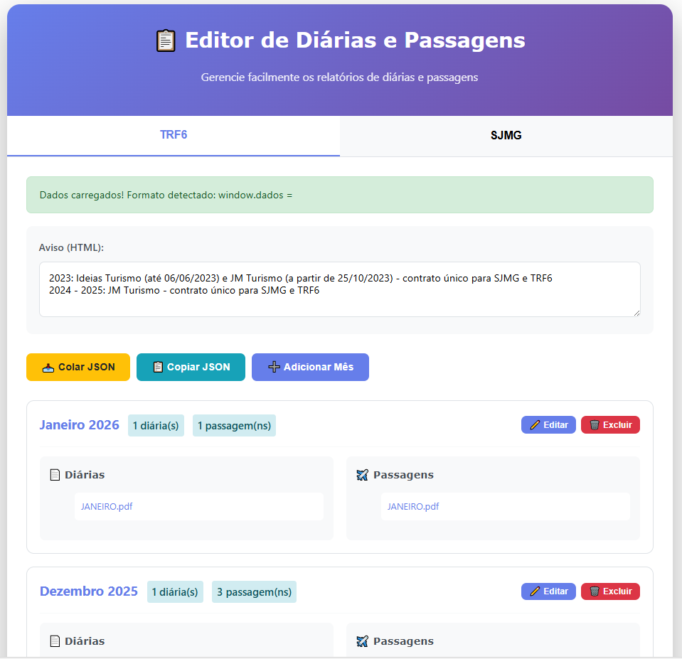
Etapa 5
O editor foi feito o mais intuitivo possível, então tudo está fácil de entender.
- Para adicionar um novo mês, clique em
Adicionar Mês
- Para editar ou excluir um mês, clique em
Editar/Excluir ao lado do mês desejado
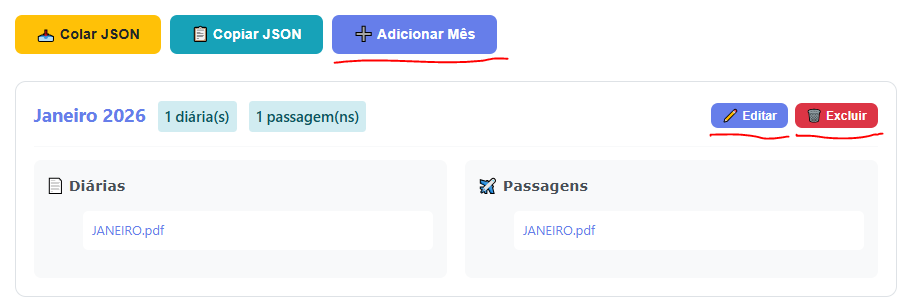
Aqui vamos mostrar como adicionar um novo mês, mas o processo de edição é semelhante
Etapa 6 - adicionando um novo mês
1) Enviando o(s) arquivo(s) para as mídias do WordPress
- No painel de admin acesse a Biblioteca de mídia do WordPress
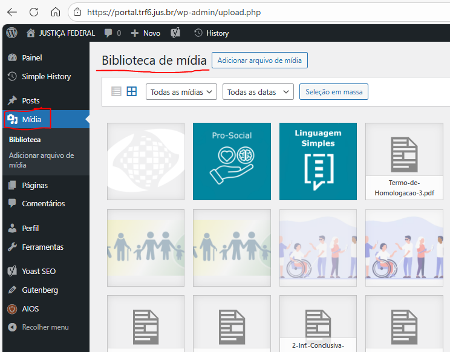
- No seu computador, abra a pasta onde o arquivo que você deseja inserir na tabela está
- Arraste o arquivo da pasta para a página da biblioteca de mídia
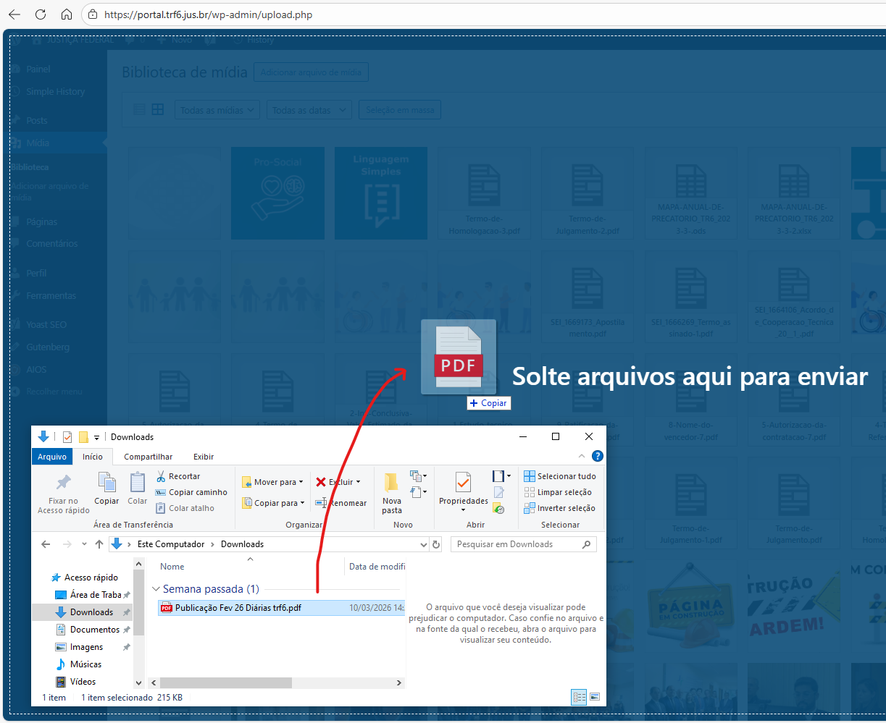
- Feito o envio, note que ele possivelmente será o primeiro arquivo a aparecer. Clique nele!
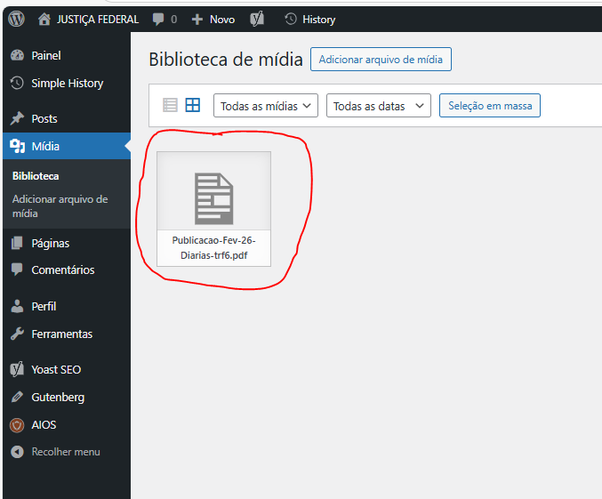
(Ignore o detalhe de que na print abaixo só aparece ele. No seu, procure pelo arquivo com o mesmo nome que você colocou)
- Na caixa que aparecer, no canto direito, tem um botão azul para copiar a URL. Clique nele para copiar a URL do arquivo.
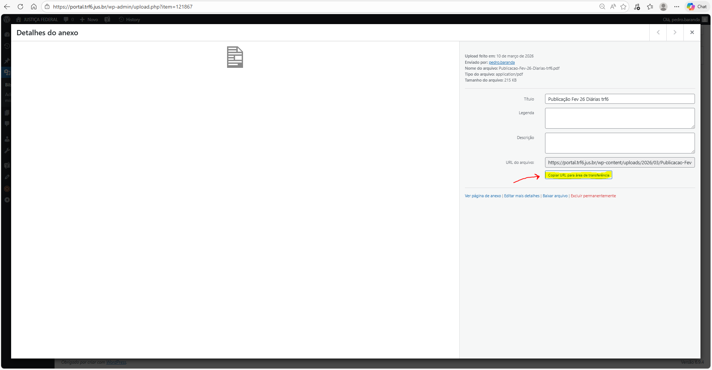
E pronto, você tem a URL do arquivo preparado para ser colado no editor. Agora vamos criar o mês e adicionar o arquivo na tabela!
2) Criando mês na tabela
- Vá para o editor e, no topo, escolha em qual adicionar: TRF6 ou SJMG
- Clique no botão
Adicionar Mês
- Na caixa que aparecer, vamos digitar o ano e selecionar o mês que queremos adicionar na tabela
- Não adicione um mês mais de uma vez. Nesses casos, edite o mês já existente
- Para adicionar uma diária, clique em
Adicionar Diária
- Em
Label, preencha com o nome do mês todo em maiúsculo seguido do formato do arquivo. Ex: FEVEREIRO.PDF
- Em
URL, cole a URL do arquivo que copiamos na biblioteca de mídias
- Para adicionar uma passagem, faremos o mesmo, porém clicando desta vez em
Adicionar Passagem
- Note que nela temos um campo novo, que é o
Tipo.
- Para adicionar um arquivo, escolha
Link, e para adicionar um texto informativo no lugar, escolha Texto
- No caso de link, os campos são semelhantes. No caso de texto, apenas insira o texto desejado na caixa que aparecer
- Por fim, clique em
Salvar Mês lá em baixo para concluir a adição do mês
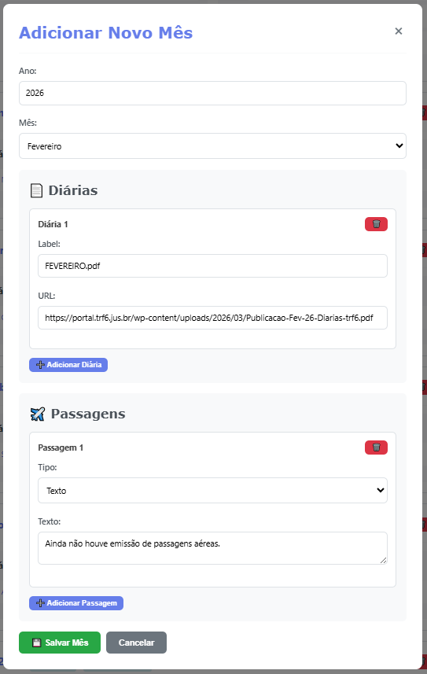
Agora vamos fazer o processo inverso do que fizemos lá no início, a fim de pegar as mudanças e passar para o WordPress.
Etapa 7
- Terminada a edição de tudo, clique em
Copiar JSON
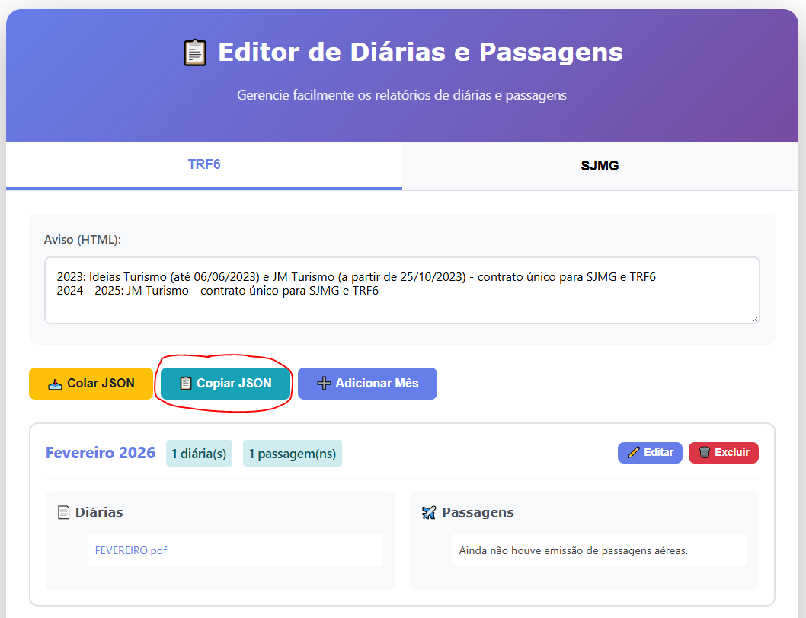
- Na caixa que aparecer, clique em
Copiar para Área de Transferência lá em baixo
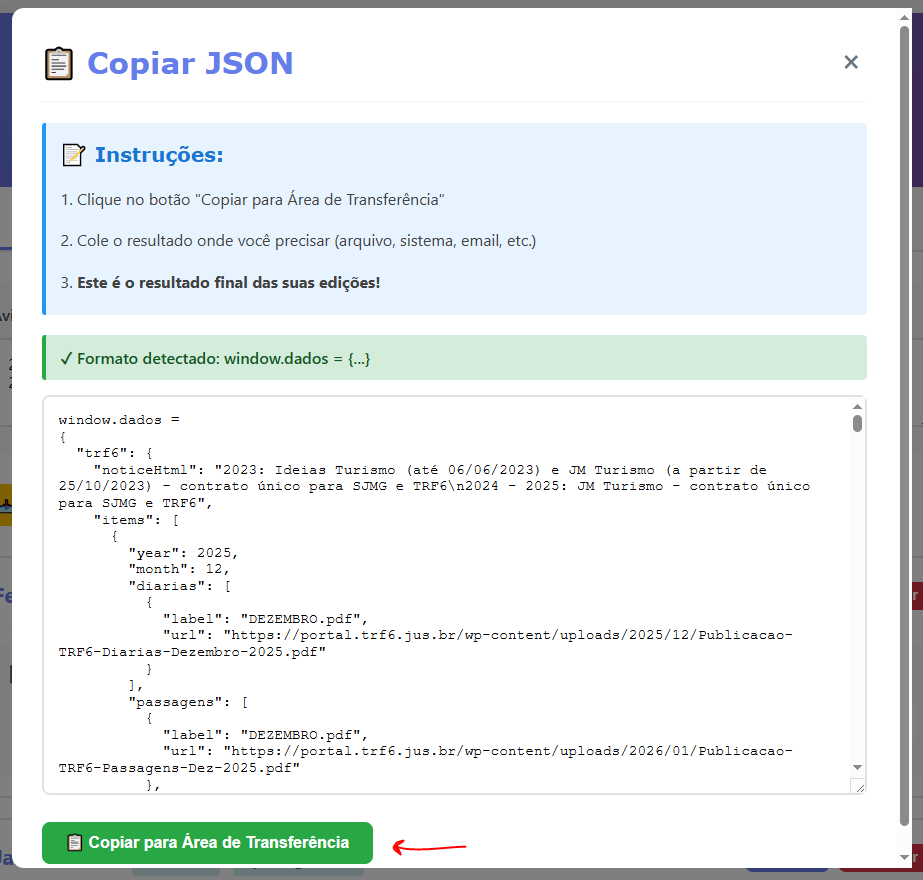
Etapa 8
- Na edição da página principal, se a caixa de edição já não estiver aberta, vamos clicar em cima da tabela e selecionar
Edit code, e depois, selecionar a aba JavaScript
- Selecione tudo que estiver dentro da caixa de texto (
Ctrl + A) e cole o que copiamos no editor (Ctrl + V)
- Você também pode fazer isso clicando em cima com o botão direito, sendo possível selecionar tudo e colar
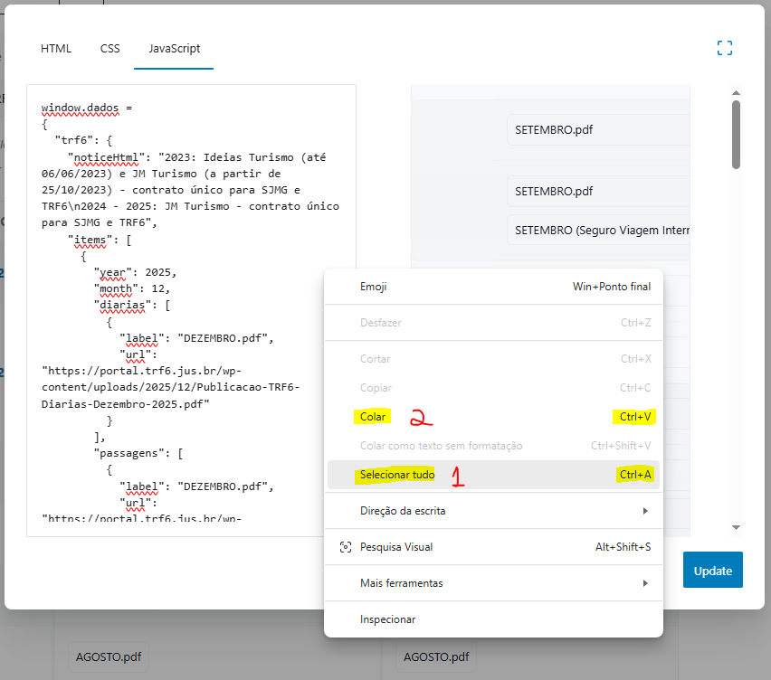
- Feito isso, clique em
Update lá em baixo
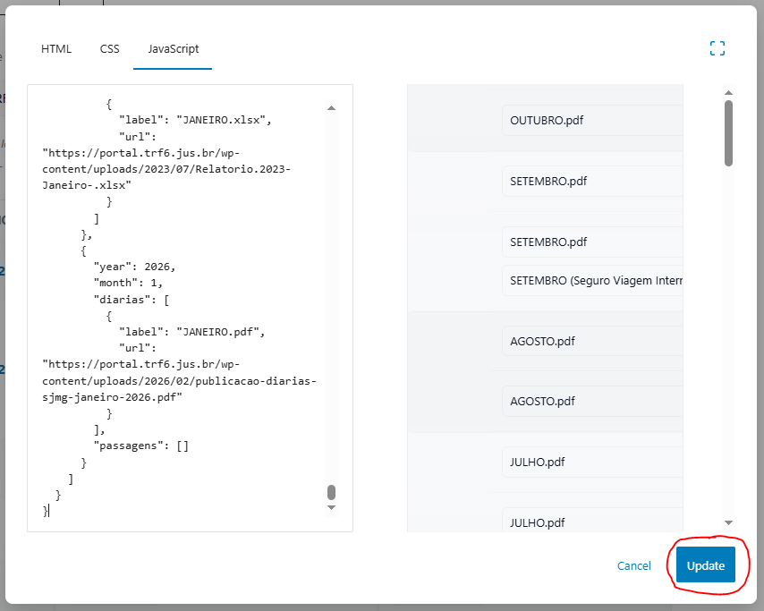
- E salve as alterações feitas na página lá em cima em
Save
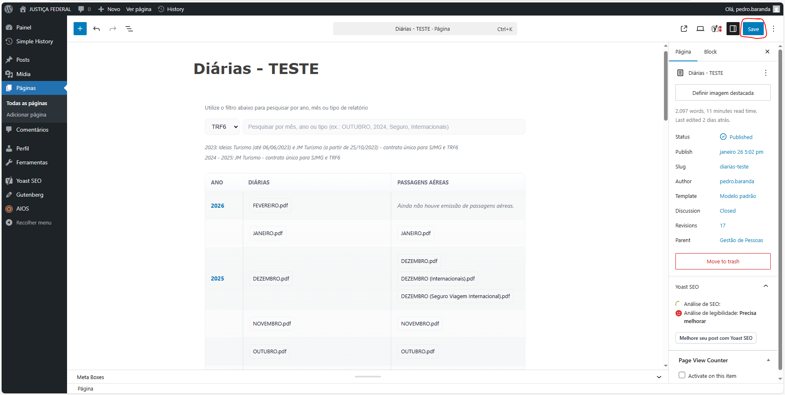